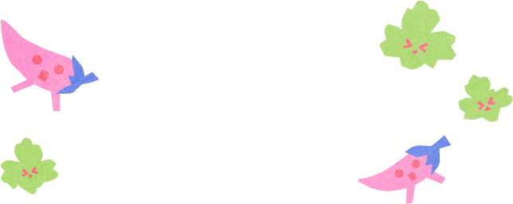
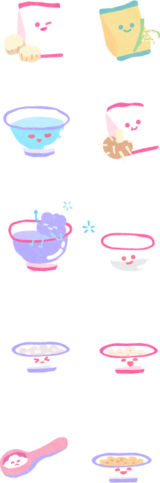
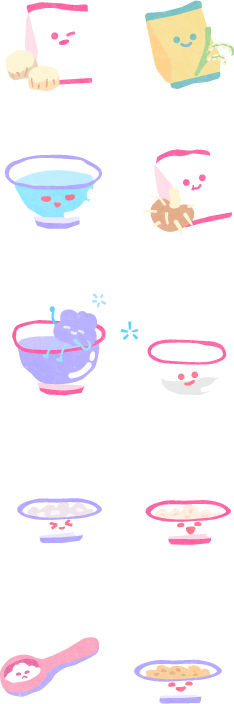
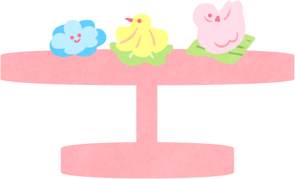
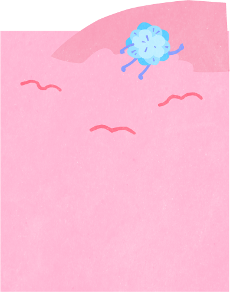

ขนมช่อม่วง

"ขนมช่อม่วง " จัดได้ว่าเป็น
ขนวมชาววังตั้งแต่
สมัยกรุง
รัตนโกสินทร์ตอนต้นใน
พระบาทสมเด็จพระพุทธเลิศหล้า
นภาลัย รัชกาลที่ 2
"ช่อม่วงเหมาะมีรส
หอมปรากฏกลโกสุม
คิดสีสไบคลุม
หุ้มห่อม่วงดวงพุดตาน"
กาพย์แห่ชมเครื่องคาว-หวาน
บทพระราชนิพนธ์พระบาท
สมเด็จพระพุทธเลิศหล้า
นภาลัย ล้นเกล้ารัชกาลที่ 2

ช่อม่วงนั้นมีวิธีทำที่คล้ายกันกับ
'ขนมจีบนก' หรือเรียกกันว่าขนมไส้
หมูในยุคนั้น
จึงสันนิฐานว่าช่อม่วง
เป็นขนมชาววังที่ถูกต่อยอดมาจาก
'ขนมจีบไทย' ที่มี
'กรมหลวงนรินทรเทวี'
เป็นผู้ริเริ่ม
ในสมัยรัชกาลที่2
เมืองไทยคับคั่ง
ด้วยคนต่างชาติจึงได้รับอิทธิพล
ด้านอาหารการกินมาผสานกับ
วิธีไทยมีอาหารประเภทเนื้อสัตว์
อย่างไก่
เป็ด หมู แพะ และแกะเพิ่ม
มากขึ้นกว่าสมัยอยุธยาที่นิยม
กินแต่ปลา เต่า กุ้งและหอย
วัตถุดิบ
 

พันธมิตรร่วมโต๊ะ

ช่อม่วง และ
จีบนกไทย
อาหารว่างที่มักอยู่คู่กันตลอดเวลา
ด้วยส่วนผสมแป้งและไส้เหมือนกัน
ต่างกันแค่การจับจีบและรูป
ลักษณ์ที่ต่างกัน
อาหารว่างทั้ง 2
อย่างนี้ก็เป็นอาหารว่างคล้ายๆกับ
สาคูไส้หมู แต่ต้องประณีตในการ
ทำมากกว่า
แป้งมัน
แป้งข้าวจ้าว
น้ำเปล่า
แป้งท้าวยายม่อม
น้ำดอกอัญชัน
หัวไชเท้าสับ
กระเทียมสับ
น้ำตาลปี๊บ
เกลือ
ถั่วลิสงคั่วบด
รากผักชี
ผักชี
ผักกาดหอม
ทำไมถึง
เริ่มเลือนราง
เนื่องจากวิธีทำที่ต้องผ่านการใช้มือ
การจับจีบทำรูปร่างดังกล่าวและ
เป็นอาหารที่มีความชื้นสูง
ไม่
สามารถเก็บไว้ได้นานทำให้ไม่ได้รับ
ความนิยมในหมู่คนทำขนม
อีกทั้งต้องอาศัยเทคนิคในการจับ
จีบ ทำให้ปริมาณที่ผลิตได้น้อย
เมื่อ
เทียบในแง่การหารายได้กับชั่วโมง
จึงไม่คุ้มต่อการทำขาย



มุ่งสู่อดีต ฉากกถัดไปกันเลย!